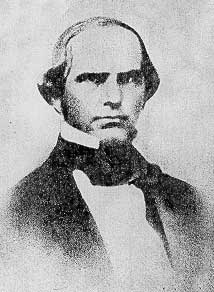

In the age of manifest destiny, America is ripe for taking by eager settlers. Settlers who are looking for a home, hopes of riches or for the search of a better life. This is the dream of many. Yet, in the harsh Sierra Nevada mountains, a group of 80 or so migrants are trapped by a nightmare of snow. A gruesome tale where survivors were forced to eat their beloved dogs, travel companions and even family members to survive. This is the story of the ill-fated Donner party.
The story of the Donner party starts with a lawyer by the name of Lansford Hastings. Hastings is not a member of the party, but he was indirectly responsible for the death of the migrants. Hastings was a man of opportunity. Back in the 1840's, California and Oregon were the destinations of westbound migrants. California was not part of the US, but part of Mexico.
Hastings saw the wondrous land of California. Land that is not owned by white men. Hastings who was full of good old Manifest destiny thought of a plan. Hastings knew if he can get enough white settlers to Atla California, the white settlers can overthrow the Mexicans and Hastings can become king of a new country. Hastings had to find a way to get people to come to Alta California. The best way Hastings thought was for a shortcut.
Hastings was not an explorer but a lawyer. And as any good lawyer would do, to make their crazy idea of overthrowing a local government. Hastings opened a map up, drew a line and said. "That's the shortcut". Hastings begun to advertise his shortcut to unsuspecting pioneers. He never did take the shortcut until people attempted to cross it. Instead of a well established trail, anyone fooled by Hasting's cutoff would be forced to literally carve their own way to California. Cutting down trees, moving boulders, hauling wagons up a mountain with teams of oxen and other beasts.